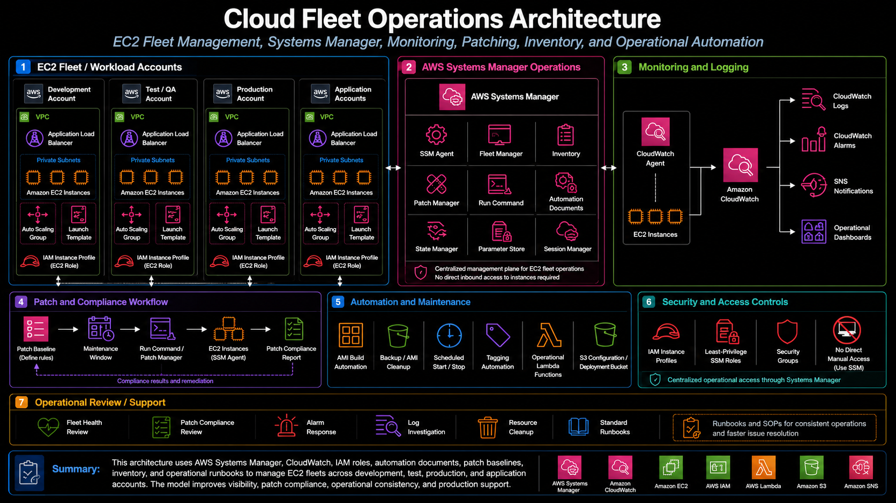

Project Documentation
Cloud Fleet Operations
This project documents cloud fleet operations for EC2-based workloads using AWS Systems Manager and supporting AWS operations services. The work focused on improving visibility into managed instances, standardizing how servers were reviewed, reducing dependency on direct SSH or RDP access, and giving cloud operations teams a clearer way to track inventory, patch status, SSM Agent health, instance configuration, and remediation follow-up.

Overview
This project documents cloud fleet operations for EC2-based workloads using AWS Systems Manager and supporting AWS operations services. The work focused on improving visibility into managed instances, standardizing how servers were reviewed, reducing dependency on direct SSH or RDP access, and giving cloud operations teams a clearer way to track inventory, patch status, SSM Agent health, instance configuration, and remediation follow-up.
The project was centered on real operational fleet management rather than a single server build. It involved using Systems Manager as the operational control plane for EC2 instances, reviewing managed node status, validating whether instances were properly enrolled, checking patch visibility, using Resource Explorer for broader resource discovery, and connecting fleet health signals to CloudWatch and standard support workflows.
Background
In a growing AWS environment, EC2 instances often support different applications, operating systems, business units, and operational patterns. Without centralized visibility, it becomes difficult to answer basic operational questions: which instances are online, which instances are managed by Systems Manager, which instances are missing inventory data, which instances have stale patch information, which nodes need SSM Agent attention, and which resources require follow-up from application or platform owners.
Systems Manager provided a better operating model for this type of fleet work. Instead of treating each server as an isolated asset that required manual login, Systems Manager made it possible to view managed nodes, inspect inventory, review patch and association data, run controlled commands, support session-based access, and standardize recurring operational checks. Resource Explorer also helped with discovery by making it easier to identify resources that might not be visible through Systems Manager because of connectivity, permissions, or agent configuration issues.
Business Problem
The business problem was operational visibility. EC2 fleets can become difficult to manage when instance health, patch status, inventory, monitoring, and ownership data are spread across accounts, consoles, tickets, and manual review processes. When a server is missing from Systems Manager or reporting stale data, troubleshooting becomes slower because the team must determine whether the issue is network access, IAM permissions, SSM Agent health, instance profile configuration, operating system state, or a tagging and ownership problem.
The platform need was to create a more repeatable operating model for fleet review and support. Cloud operations needed a way to identify managed and unmanaged instances, confirm that required agents and roles were in place, review patch visibility, check inventory and association status, and route remediation work clearly. This helped reduce manual troubleshooting and created a more consistent method for supporting EC2 fleets across the cloud estate.
Architecture
The architecture used AWS Systems Manager as the primary operations layer for EC2 fleet visibility. EC2 instances were expected to have the correct SSM Agent configuration, network reachability, and IAM instance profile permissions so they could register as managed nodes. Once enrolled, Systems Manager provided visibility into instance metadata, inventory, patch state, associations, command history, and operational status.
The fleet operations model also depended on supporting services. IAM instance profiles granted EC2 instances the permissions required for Systems Manager management and CloudWatch integration. State Manager associations supported recurring configuration and patch scan workflows. Patch Manager provided patch baseline and compliance visibility. Run Command supported controlled operational actions without requiring direct server login. Resource Explorer improved discovery across AWS resources, while CloudWatch collected logs, metrics, alarms, and operational signals used during investigation and support.
What I Did
I supported cloud fleet operations by reviewing Systems Manager managed node visibility, validating whether EC2 instances were properly enrolled, checking SSM Agent and instance profile requirements, and helping identify why specific nodes were not reporting expected inventory or patch data. This included reviewing Systems Manager Fleet Manager, Inventory, Patch Manager, State Manager associations, Run Command behavior, Resource Explorer visibility, CloudWatch logs and alarms, and the relationship between EC2 configuration and operational access.
I also helped translate fleet visibility issues into practical remediation steps. When an instance was not appearing as a managed node, the investigation needed to consider the SSM Agent, instance profile, network path to Systems Manager endpoints, operating system state, tags, and whether the instance was stopped, terminated, or otherwise unable to report. When patch data was missing or stale, the review needed to confirm whether patch scan associations were assigned, whether the instance had the right patch baseline, and whether the agent could execute the required Systems Manager actions.
Implementation Details
1. Managed node visibility
A major part of the implementation was reviewing EC2 instances through Systems Manager managed node views. Managed node visibility helped confirm which instances were online, which instances were reporting inventory, and which instances had Systems Manager connectivity. This provided a more reliable starting point for operations than checking EC2 instances one by one.
2. SSM Agent and instance profile review
Systems Manager depends on the SSM Agent, the correct IAM instance profile, and network access to AWS service endpoints. When an instance did not report properly, the review process included checking whether the agent was installed and running, whether the instance had the expected role permissions, and whether the instance could reach Systems Manager. This made troubleshooting more structured and reduced guesswork during support.
3. Inventory and association tracking
Systems Manager Inventory and State Manager associations were used to support recurring visibility into instance configuration and operational state. Inventory data helped identify operating system details, installed software, instance metadata, and managed node characteristics. Association status helped show whether recurring configuration or scan workflows were applying successfully.
4. Patch visibility and compliance review
Patch visibility was handled through Systems Manager patch scan and Patch Manager workflows. The goal was not only to install patches, but also to understand which instances had current patch information, which instances were missing scan data, and which servers needed follow-up. This made patch compliance review more actionable because missing or stale data could be treated as an operational finding instead of being ignored.
5. Run Command and controlled operational actions
Run Command provided a controlled way to execute approved operational commands against managed instances. This helped reduce reliance on direct login for routine checks and supported a more auditable operational model. Commands could be used for targeted troubleshooting, agent checks, configuration validation, or other approved support actions when direct interactive access was not required.
6. Resource Explorer discovery
Resource Explorer supported broader AWS resource discovery and helped identify resources that were not immediately visible through Systems Manager. This was useful when investigating gaps between EC2 inventory and Systems Manager managed node visibility. It also helped support fleet review by giving operations teams another way to find and search AWS resources across regions or account scopes.
7. CloudWatch monitoring and operational signals
CloudWatch supported the fleet operations process by collecting logs, metrics, alarms, and operational signals. For EC2-based workloads, this included CloudWatch Agent configuration where appropriate, instance-level metrics, log streams, alarm notifications, and troubleshooting data. CloudWatch visibility helped connect server health and application support work to the broader operations workflow.
Validation
Validation focused on confirming that EC2 instances were visible and manageable through Systems Manager. A healthy managed node needed to appear online, report inventory or association data, have a functioning SSM Agent, and use an IAM instance profile with the required permissions. For instances that were not visible, validation required checking the instance state, agent status, role attachment, endpoint connectivity, tags, and whether any account-level settings prevented Systems Manager from managing the node.
Patch validation focused on whether patch scan data was current and whether the expected baseline or association was applied. A successful patch visibility workflow needed to show that the instance could receive the association, run the scan or command, report status, and produce useful compliance information. When patch results were missing, the issue was treated as a fleet visibility gap that required follow-up.
Operational Workflow
The operational workflow began with fleet discovery. The team reviewed Systems Manager managed nodes, EC2 inventory, Resource Explorer results, and account-level resource views to understand what was running and what was reporting. Instances were then grouped by management status: healthy managed nodes, nodes with stale data, nodes missing patch visibility, and EC2 resources that required investigation because they were not reporting through Systems Manager.
For healthy managed nodes, the workflow moved into regular operations: review inventory, review patch scan status, confirm association results, check monitoring, and investigate alarms or support tickets as needed. For unhealthy or missing nodes, the workflow moved into remediation: check SSM Agent status, verify the IAM instance profile, confirm network access, review instance state, validate tags, and document the next action.
Outcome
The project improved fleet visibility by making Systems Manager the central operating layer for EC2 review and support. It reduced the need to troubleshoot each server manually and gave the platform team a clearer way to identify managed nodes, missing nodes, stale inventory, patch visibility gaps, and monitoring issues. This made operational support more structured and reduced the amount of guesswork involved in EC2 fleet troubleshooting.
The work also strengthened patch and compliance visibility. By treating inventory, associations, and patch scan data as part of the fleet operating model, the team had a clearer path for identifying which instances were healthy, which needed follow-up, and which required remediation. This improved the consistency of fleet review and created a stronger foundation for recurring operations.
What This Demonstrates
This project demonstrates practical AWS operations experience with EC2 fleet management, Systems Manager, managed nodes, inventory, State Manager, Patch Manager, Run Command, Resource Explorer, CloudWatch, IAM instance profiles, and operational troubleshooting. It shows the ability to manage cloud infrastructure as an operating model, not just deploy individual resources.
It also demonstrates platform engineering judgment. Effective fleet operations require more than knowing where the EC2 console is. They require understanding how agents, permissions, associations, patch baselines, monitoring, resource discovery, and support workflows fit together. This project shows how those pieces can be organized into a repeatable cloud operations process that improves visibility, strengthens remediation tracking, and supports ongoing production support.